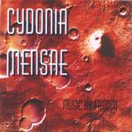

| Artist: | Franco |
| Title: | Cydonia Mensae |
| Label: | Shouting Colours Publishing |
| Length(s): | 52 minutes |
| Year(s) of release: | 2000 |
| Month of review: | 05/2000 |
| 1) | Raising Caine | 5.55 |
| 2) | Cydonia Mensae | 6.24 |
| 3) | Twisted Fusion | 5.49 |
| 4) | Red Blood | 4.22 |
| 5) | Diamond Rust | 6.37 |
| 6) | Godzilla | 6.34 |
| 7) | With You Again | 6.26 |
| 8) | Save It | 5.16 |
| 9) | Tornado Dreams | 4.13 |